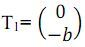
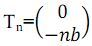

Aplikasi Translasi
Translasi menjadi konsep geometris yang sering dijumpai pada kearifan lokal Indonesia yaitu Batik , kalian pasti sudah kenal kan ya mengenai Batik yang menjadi motif khas kebudayaan Indonesia. Perhatikan motif batik berikut ini dan amati proses translasi nya!
Berikut ini adalah salah satu motif sasirangan (Kalimantan) yang disebut dengan ombak sinampar karang.
Bentuk dasar dari motif sasirangan ini berupa garis lengkung (Gb. 1).
Selanjutnya penggabungan dari pencerminan bentuk dasar (Gb.1) terhadap garis horisontal menghasilkan bentuk mirip kelopak bunga (Gb. 2).
Misalkan motif mirip kelopak bunga tersebut diletakkan pada sumbu cartesius, maka bentuk kelopak bunga selanjutnya diperoleh melalui translasi atau pergeseran vektor  berikut ini (Gb. 3).
Dan seterusnya translasi dilakukan dengan menggunakan rumus vektor dengan n adalah bilangan asli sehingga diperoleh rangkaian kelopak bunga yang membentuk motif ombak sinampar karang berikut ini (Gb. 4)